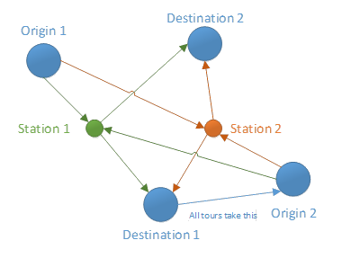

Station Choice
GTAModel V4.0's access station choice model has been improved to be a tour based station choice model. This allows us to be able to consider different times of day when choosing what station is selected. For example if you were to leave in the AM from Hamilton, you might chose to drive to Aldershot station instead of Hamilton station if you wanted to return in the evening since trains won't go as far as Hamilton at that time of day.

The systematic utility for each access station is simply a linear function where we compose both the access trip and the egress trip. The closest station term is only added for the access trip. Each variable is the summation of both access and egress trips.
The model is also designed to be sensitive to the parking capacity for each station. For the initial iteration the demand for each access station is taken from the 2011 TTS. We use the inverse of the conical function to achieve this so as a station becomes more congested the attractiveness of that station is diminished for the next iteration as given by the following formulas.
Where,
The probability of selecting a station is then given by its logit form, including the capacity factor scaling term, seen below.